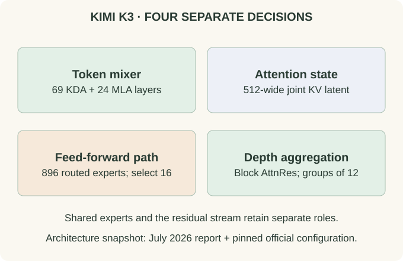

Kimi K3: Read a Modern Hybrid Model from Its Configuration
-
01 Identify the token-mixing scheduleRepeated over layers 1–92; one extra MLA at layer 93KDA KDA KDA MLA
The pinned configuration yields 69 KDA and 24 MLA layers. The final additional MLA layer matters to the count.
-
02 Separate state from feed-forward capacityKDA Recurrent matricesMLA 512-wide joint KV latentRouted MoE 16 of 896 experts
The memory format and the expert selection policy act on different parts of the model.
-
03 Add the depth aggregation ruleToken mixing KDA / MLAFeature transformation Latent MoE + shared pathDepth sources Block AttnRes
These labels describe different axes. Read the exact nested configuration fields and active flags before estimating storage.
Read the picture first, then follow the derivation below.
Fix the version before interpreting the architecture
This article uses the July 2026 Kimi K3 technical report, the official repository, and an official configuration pinned to revision f831ab6. It is an architecture walkthrough, not a claim about current benchmark leadership or a recommendation to deploy a particular checkpoint.
Read KDA, MLA, MoE, and AttnRes first. We will connect them here instead of deriving them again.
Translate fields into a computation graph
Field names below are relative to text_config. The recurrent head dimensions and layer schedules live inside its nested linear_attn_config object.
| Configuration field or list | Value | What to infer |
|---|---|---|
num_hidden_layers, hidden_size | 93; 7168 | Depth and residual width of the text stack |
linear_attn_config.full_attn_layers | 4, 8, …, 92, 93 | 24 MLA layers; the other 69 use KDA |
num_attention_heads, linear_attn_config.head_dim | 96; 128 | Inspect the mixer-specific projections; head width is not automatically residual width divided by head count |
kv_lora_rank, mla_use_nope | 512; true | A compressed KV latent with the NoPE MLA path enabled |
num_experts, num_experts_per_token, num_shared_experts | 896; 16; 2 | A large routed bank plus shared computation |
routed_expert_hidden_size, moe_intermediate_size | 3584; 3072 | Routed experts operate in a narrower hidden space |
first_k_dense_replace | 1 | The first feed-forward layer uses the dense path |
attn_res_block_size | 12 | Block depth aggregation; the final group can be partial |
max_position_embeddings | 1,048,576 | A configured context limit, not an accuracy or latency guarantee |
The table is read from the pinned configuration. In particular, fields naming a rotary dimension can coexist with mla_use_nope: true. A stored configuration value is not proof that the corresponding branch is active. Resolve flags against the implementation and report before counting memory.
The layer schedule has an exception at the end
Layers 1–92 follow a repeating three-KDA, one-MLA pattern. Layer 93 adds another MLA layer. Counting multiples of four gives 23 MLA layers in the first 92; adding the last gives 24, leaving 69 KDA layers. Calling the entire 93-layer stack “exactly 3:1” would miss this boundary condition.
Each KDA layer maintains its own recurrent state. Each MLA layer keeps its own token-indexed latent history. Representations pass through both kinds of layer in sequence, so this is one coupled model rather than an ensemble choosing between independent models.

{kind=link}
Estimate the attention cache without double-counting
For the active NoPE MLA path, use one 512-dimensional joint KV latent per token per MLA layer in an idealized compressed-cache accounting. Do not count two independent 512-dimensional caches just because the latent serves both keys and values. Do not add an inactive rotary-key field.
At two bytes per latent scalar, the 24 MLA layers contribute $24\times512\times2=24{,}576$ bytes, or 24 KiB, per token per sequence. At 1,048,576 tokens this is 24 GiB before KDA states, short convolution buffers, metadata, allocator overhead, model weights, and runtime workspace. An implementation that expands or duplicates the latent has a different budget.
For another explicitly idealized estimate, 69 KDA layers with 96 states of shape $128\times128$ contain $69\times96\times128^2=108{,}527{,}616$ state scalars per sequence. That is 207 MiB at two bytes or 414 MiB at four bytes. The actual state dtype is a runtime detail. These are arithmetic deductions from dimensions, not profiler measurements.
NoPE in the MLA branch does not make the whole model order-invariant. Causal recurrence updates state in sequence order, and the MLA inputs have already passed through those order-sensitive layers.
Read expert dimensions separately from residual width
The routed hidden width is 3584, half the residual width 7168. A three-matrix gated expert with intermediate width 3072 therefore has approximately $3\times3584\times3072=33{,}030{,}144$ matrix parameters. Multiplying by 896 gives about 29.6 billion parameters in one routed bank, while selecting 16 uses about 528 million of those expert matrix parameters per token. This calculation excludes the shared path, routers, compression projections, biases, and all other sublayers.
The report describes the routed path as latent MoE and discusses bounded activations and stability choices. A reduced routed width changes the expert matrices and routed representation; it does not shrink the entire residual stream to 3584 dimensions. Shared experts remain a separate path.
Depth selection is a third kind of routing
A block size of 12 over 93 layers yields eight computational groups, with a partial final group. The embedding is an additional depth source. Keep those counts separate: eight groups does not mean that the model has eight layers, eight token-attention heads, or eight experts.
Token mixing decides how earlier sequence information reaches a position. MoE routing selects transformation functions for that position. AttnRes weights earlier depth sources before subsequent computation. These three selections can coexist because their candidate axes differ.
What a configuration cannot tell you
The report also includes a vision pathway; the table above focuses on the language stack and is not a complete multimodal parameter inventory. A configuration alone cannot reproduce the training corpus, optimizer history, quality of long-context retrieval, or deployment throughput. Maximum context capacity says a sequence length is configured, not that every task at that length will work equally well.
A useful reproduction exercise is to parse the layer lists, assert they partition 1 through 93, count cache-bearing layers, and inspect which flags activate each branch. Only then estimate memory and compare with measured allocations. This workflow generalizes to other model reports without treating a model name as a sufficient specification.
Try it: Why is 7168 / 96 not the KDA head width in the configuration?
Because projections can expand into a concatenated head space whose width differs from the residual stream. Here the explicit head dimension is 128. Assuming every model enforces d_model = heads × head_dim would misread the shapes.
Use the same method on another model
Return to the evolution and comparison map. For a new architecture, identify its token mixer, stored state, position mechanism, feed-forward function, residual mechanism, and execution strategy independently.